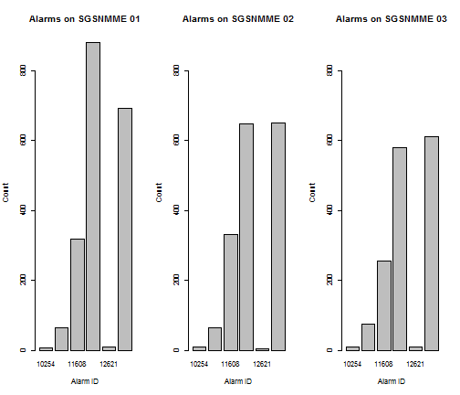
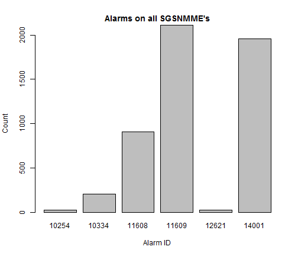

PS Network Alarms APP
Data Produts Project
Yonatan Geremew
Mar 20 2015
Background
- The main network elements in the Mobile Packet Switching network are the SGSN/MME and GGSN/PGW in a hybrid UMTS/LTE
network.
- These in collaboration with other core network elements provide the data service for the customers.
- A good service provision depends on the health of these network elements, hence it is crucial to monitor the alarms.
- The 'PS Network Alarms' application is a handy tool for this important network operator activity.
Data Source
- For this application I have selected the SGSN/MME network elements.
- The alarms are collected from three SGSNMME nodes.
- Here is the summary:
## Alarm.ID Alarm.Source
## 10254: 29 SGSNMME_01.HW.NF.AA:1976
## 10334: 205 SGSNMME_02.HW.MW.AA:1712
## 11608: 908 SGSNMME_03.HW.KK.AA:1542
## 11609:2108
## 12621: 26
## 14001:1954
Graphic Comparison
Using the app, we can compare which alarms are more prominent on which nodes.

The APP
On the PS Network alarms application you have a dropdown menu
option for selecting anyone of the nodes to display the alarms including the option to see all the alarms on all of the nodes, as below.

Thank You!